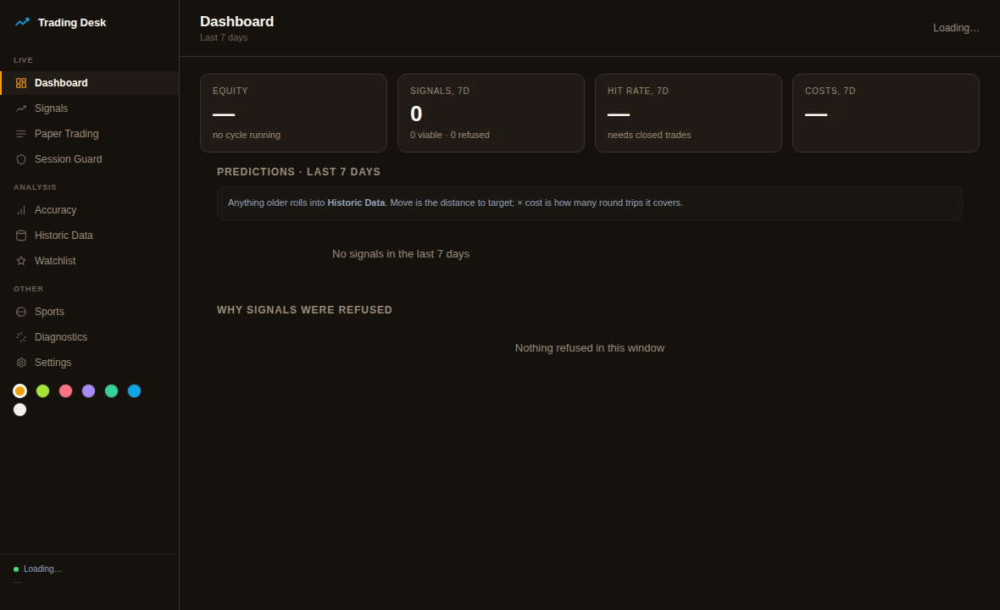
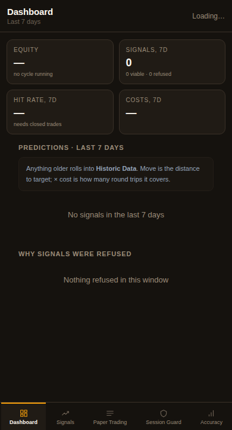
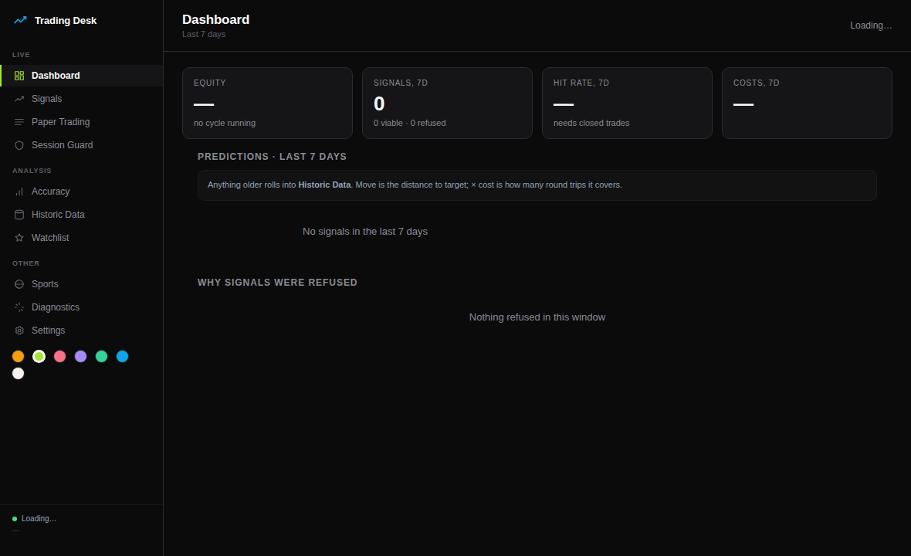
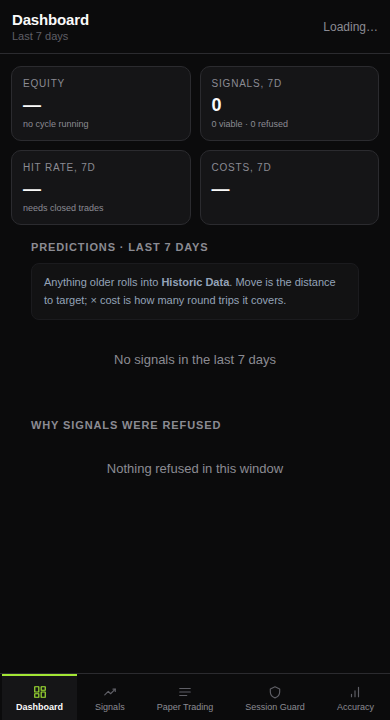
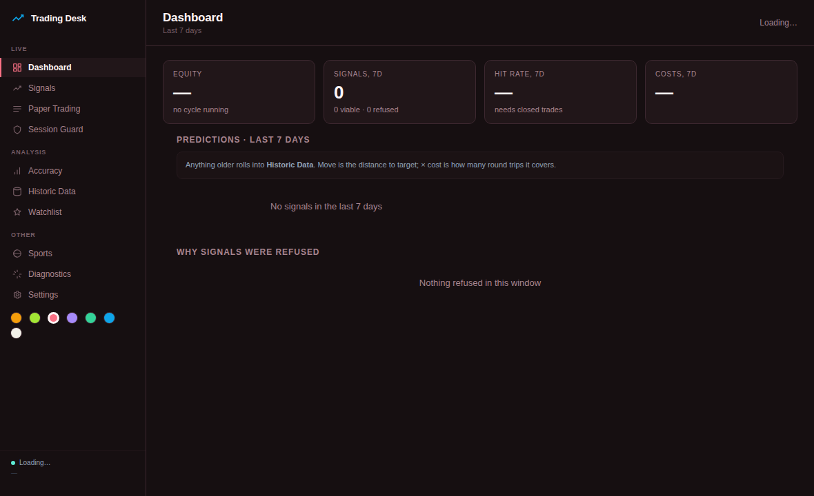
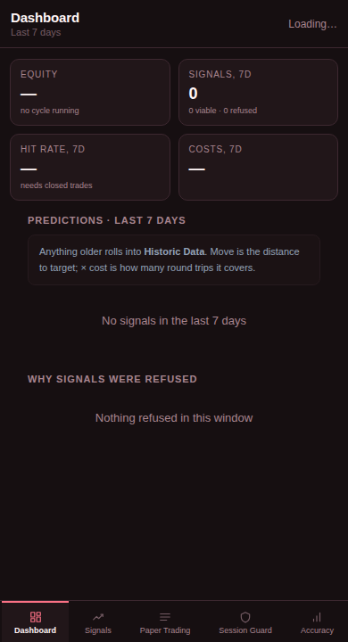

Rendered from the live page, not mocked. All three are already installed — the dots in the sidebar switch between them instantly, so this is about which becomes the default rather than which gets built.
Warm charcoal, amber accent. A trading-terminal look — the least blue of the set, and easiest on the eyes at night.
Trade-off — Amber reads as caution rather than profit, so it never competes with the green/red that carries meaning.


Near-black neutral with a lime accent. The highest contrast option and the most modern.
Trade-off — Pure neutral greys mean nothing tints your P&L colours. Lime is bright — it may be too loud in a dark room.


Dark warm plum with rose. Profit switches to teal so it stays distinct from the rose chrome.
Trade-off — The one direction that changes what green means — worth checking you do not misread a teal profit badge.

